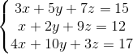
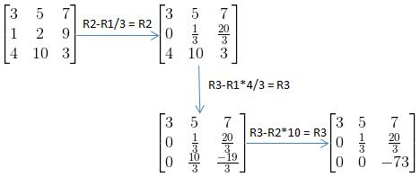
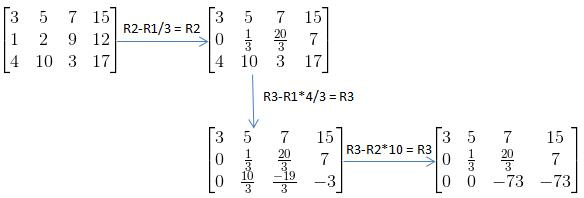
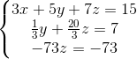
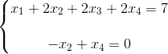
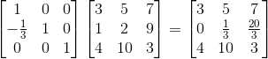
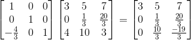
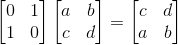
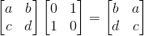

相信各位高中或初中就学过多元函数求解，其实用的都是消元法。只不过这里的表现形式从方程组变成矩阵而已。
我们先来看一组方程式:

其矩阵表示形式AX=b如下：

那么要求这个方程组，我们首先想到的就是消元。而最直观的想法就是从上往下逐级消元，比如第一行保留x,y,z，第二行只保留y,z，第三行只有z，这样就能逐级求出方程组的解了。放到矩阵中也是类似，我们可以把矩阵A变成一个上三角矩阵(上三角矩阵的对角线左下方的系数全部为零)，其运用的也是消元的思想：

我们再来结合下输出结果b，将结果b合并到原先矩阵A后生成的矩阵叫做增广矩阵，如下所示：
将刚刚消元的矩阵换成增广矩阵后变成：

其可转换成方程组的形式：

可以容易求出：
上例我们求出了一个唯一解，但上一章我们还发现有存在无数解的情况，那么这些情况该如何处理？
继续给出一个例子：
我们继续使用增广矩阵消元法来求解：
转换成方程的形式得：

这时我们可以对X3，X4取自由值（具体原因之后会有章节会详讲，可见AX=0？），比如这里我们常用的值是都设为0。所以这里就有一组特解：
但很明显这组方程有无数个解，那么该如何来表示，这时可以让特解加上常数C倍的零解（AX=0的解），使其代表方程的实际输出。这是为什么？
原因很简单，将特解用X1表示，零解用X2表示，那么A(X1+CX2)=AX1+ACX2=b+C*0=b，所以这组解符合原方程的输出。我们再从图像的角度来分析这组解，特解X1表示的是一个向量，零解X2则表示的是一个空间。不知各位能不能想象出来，一个本来经过零点的空间（零空间必定经过零点），被向量给顶偏移了，最后那个空间就变成了AX=b的解空间。由于例子的解是4维图像比较难画，我们用一个三维空间来画图解释下：
一开始假定零空间为一平面，其必定经过零点：
因为加了一个特解进去零空间发生了位移：
解空间上面的解都是AX=b的解，同时也符合特解加上C倍的零解这一表现形式：
回到之前那个例子，其零解为(具体计算过程这里不讲，后面会有一个章节来进行介绍AX=0？)

所以最后AX=b的解空间为：
其中C1，C2都是常数，验证结果正确。
最后，我们再来看一下什么情况下无解。上一章已经通过列空间分析了无解的情况，这里我们简要通过消元计算的形式来分析无解的情况。假定有一个方程AX=b：
还是用增广矩阵消元得：

这时就有一个很明显的性质显示出来，如果b3-b1-b2!=0，那么这条方程无解。如果b3-b1-b2=0，那么方程有无数解（有无数解的原因可看上章内容AX=b的解？中关于解个数的分析）
在机器学习里，解方程不是重点，重点是矩阵的性质。所以我们再回过头来看刚刚那个矩阵A：

假定有一个矩阵U：

那A可以通过一个矩阵乘法转换成矩阵U么？答案是肯定可以。已知矩阵U是矩阵A的第二行减去第一行的1/3并替代第二行后得到的，那么我们的转换矩阵可以写成下面这种形式:
容易验证：

这条性质很重要，需要发动脑筋想象下具体变化过程，了解转换矩阵的用途。
接下来还有一个性质，如果矩阵U还想继续变化成矩阵V：
那还需要继续左乘一个转换矩阵：

可以验证：

那么，有没有一个转换矩阵可以让矩阵A直接变成矩阵V，由于矩阵乘法遵循乘法结合律，所以有如下：
这时我们还会问，是否存在一个转换矩阵可以使原矩阵行顺序交换的，答案是存在的：

那使列顺序交换的呢？这时就不能左乘了，得右乘：

那是否存在转换矩阵不改变原矩阵的，这种转换矩阵叫做单位矩阵（n*n矩阵上主对角线上值全为1，其余值全为0）:

那是否存在一个矩阵能让矩阵U回退回矩阵A呢？答案是有的，而这种矩阵与原先让矩阵A变成矩阵U的转换矩阵互为逆矩阵，对于逆矩阵的介绍，我想放到下一章节再继续，矩阵可逆？